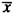
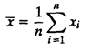
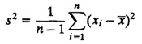

| Previous | Table of Contents | Next |
Speed, quality, price. Pick any two.
— James M. Wallace
In order to test multiple alternatives under identical conditions, the workload should be repeatable. Since a real-user environment is generally not repeatable, it is necessary to study the real-user environments, observe the key characteristics, and develop a workload model that can be used repeatedly. This process is called workload characterization. Once a workload model is available, the effect of changes in the workload and system can be studied in a controlled manner by simply changing the parameters of the model. This chapter describes several techniques for workload characterization.
Workload characterization requires using several statistical techniques that are covered later in Part III of this book. You may skip this chapter during the first pass and come back to it after reading that part.
The discussion in this chapter requires a knowledge of basic probability theory and statistics. A brief introduction to the required concepts is presented in Chapter 12. Therefore, if you are not familiar with probability theory and statistics, you may skip this chapter and return to it after reading Part III.
The measured workload data consists of services requested or the resource demands of a number of users on the system. Here the term user denotes the entity that makes the service requests at the SUT interface (see Chapter 5 for a definition of SUT). The user may or may not be a human being. For example, if the SUT is a processor, the users may be various programs or batch jobs. Similarly, the users of a local-area network are the stations on the network. In workload characterization literature, the term workload component or workload unit is used instead of the user. The workload characterization consists of characterizing a typical user or workload component. Other examples of workload components are as follows:
The key requirement for the selection of the workload component is that it be at the SUT interface. Another consideration is that each component should represent as homogeneous a group as possible. For example, if users at a site are very different, combining them into a site workload may not be meaningful. The purpose of the study and the domain of the control of the decision makers also affects the choice of components. For example, a mail system designer is more interested in determining a typical mail session than a typical user session combining many different applications.
The measured quantities, service requests, or resource demands, which are used to model or characterize the workload, are called workload parameters or workload features. Examples of workload parameters are transaction types, instructions, packet sizes, source destinations of a packet, and page reference pattern.
In choosing the parameters to characterize the workload, it is preferable to use those parameters that depend on the workload rather than on the system. For example, the elasped time (response time) for a transaction is not appropriate as a workload parameter, since it depends highly on the system on which the transaction is executed. This is one reason why the number of service requests rather than the amount of resource demanded is preferable as a workload parameter. For example, it is better to characterize a network mail session by the size of the message or the number of recipients rather than by the CPU time and the number of network messages, which will vary from one system to the next.
There are several characteristics of service requests (or resource demands) that are of interest. For example, arrival time, type of request or the resource demanded, duration of the request, and quantity of the resource demanded by each request may be represented in the workload model. Particularly those charcteristics that have a significant impact on the performance should be included in the workload parameters, and those that have little impact should be excluded. For example, if the packet size has no impact on packet forwarding time at a router, it may be omitted from the list of workload parameters, and only the number of packets and arrival times of packets may be used instead.
The following techniques have been used in the past for workload characterization:
These techniques will be discussed one by one.
The simplest method to characterize a workload parameter is to present a single number that summarizes the parameter values observed. This single value is called average. If {x1,x2,...,xn} are n observed values of of a workload parameter, the most common alternative is the arithmetic mean  given by

There are cases, however, when arithmetic mean is inappropriate and the median, mode, geometric mean, or harmonic mean should be used instead. These alternatives and the conditions under which each one is appropriate are discussed in Chapter 12. In particular, if a parameter is categorical, then the most frequent value, called mode, should be used. For example, if the destination addresses of packets are A, B, and C, the sum of addresses or average address has no meaning. Instead, most frequent destination should be specified. Of course, if the frequency of the mode is not significantly different from other values, top-two, top-three, or top-n values may be specified.
The average alone is not sufficient if there is a large variability in the data. Variability is commonly specified by the variance. It is denoted by s2 and is computed as follows:

The standard deviation s, which is the square root of the variance, is often more meaningful because it is expressed in the same units as the mean. The ratio of the standard deviation to the mean is called the Coefficient Of Variation (C.O.V.).
Other alternatives for specifying variability are range (minimum and maximum), 10- and 90-percentiles, semi-interquartile range, and the mean absolute deviation. These alternatives and the conditions under which they are appropriate are discussed in Section 12.8.
A zero C.O.V. implies zero variance and indicates that the measured parameter is a constant. In this case, the average value gives the same information as the complete set. A high C.O.V. indicates high variance, in which case the mean is not sufficient. In fact, if the C.O.V. is high, it may be useful to look at the complete histogram, as discussed in the next section. Another alternative is to divide the users into different classes and take averages only for those users that have similar parameters.
| Previous | Table of Contents | Next |